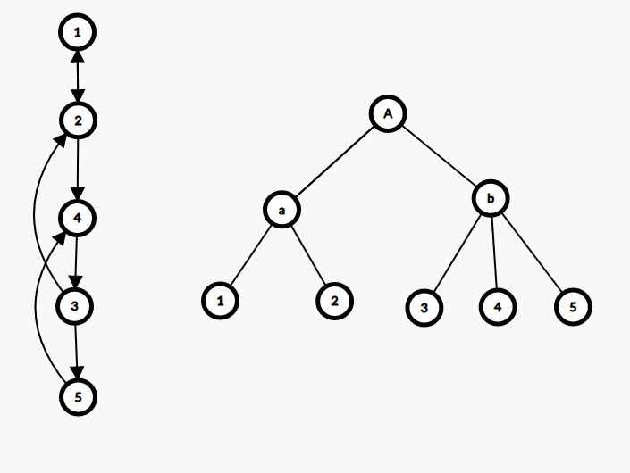

Dmst
定义
有向图上的最小生成树（Directed Minimum Spanning Tree）称为最小树形图．
常用的算法是朱刘算法（也称 Edmonds 算法），可以在 $O(nm)$ 时间内解决最小树形图问题．
过程
- 对于每个点，选择指向它的边权最小的那条边．
- 如果没有环，算法终止；否则进行缩环并更新其他点到环的距离．
实现
bool solve() {
ans = 0;
int u, v, root = 0;
for (;;) {
f(i, 0, n) in[i] = 1e100;
f(i, 0, m) {
u = e[i].s;
v = e[i].t;
if (u != v && e[i].w < in[v]) {
in[v] = e[i].w;
pre[v] = u;
}
}
f(i, 0, m) if (i != root && in[i] > 1e50) return 0;
int tn = 0;
memset(id, -1, sizeof id);
memset(vis, -1, sizeof vis);
in[root] = 0;
f(i, 0, n) {
ans += in[i];
v = i;
while (vis[v] != i && id[v] == -1 && v != root) {
vis[v] = i;
v = pre[v];
}
if (v != root && id[v] == -1) {
for (int u = pre[v]; u != v; u = pre[u]) id[u] = tn;
id[v] = tn++;
}
}
if (tn == 0) break;
f(i, 0, n) if (id[i] == -1) id[i] = tn++;
f(i, 0, m) {
u = e[i].s;
v = e[i].t;
e[i].s = id[u];
e[i].t = id[v];
if (e[i].s != e[i].t) e[i].w -= in[v];
}
n = tn;
root = id[root];
}
return ans;
}
Tarjan 的 DMST 算法
Tarjan 提出了一种能够在 $O(m+n\log n)$ 时间内解决最小树形图问题的算法．
这里的算法描述以及参考代码基于 Uri Zwick 教授的课堂讲义，更多的细节可以参考原文．
过程
Tarjan 的算法分为 收缩 与 伸展 两个过程．接下来先介绍 收缩 的过程．
我们需要假设输入的图是满足强连通的，如果不满足那么就加入 $O(n)$ 条边使其满足，并且这些边的边权是无穷大的．
我们需要一个堆存储结点的入边编号，入边权值，结点总代价等相关信息，由于后续过程中会有堆的合并操作，这里采用 左偏树 与 并查集 实现．算法的每一步都选择一个任意结点 $v$，需要保证 $v$ 不是根节点，并且在堆中没有它的入边．再将 $v$ 的最小入边加入到堆中，如果新加入的这条边使堆中的边形成了环，那么将构成环的那些结点收缩，我们不妨将这些已经收缩的结点命名为 超级结点，再继续这个过程，如果所有的顶点都缩成了一个超级结点，那么收缩过程就结束了．整个收缩过程结束后会得到一棵收缩树，之后将对它进行伸展操作．
堆中的边总是会形成一条路径 $v_0\leftarrow v_1\leftarrow \dots\leftarrow v_k$，由于图是强连通的，这个路径必然存在，并且其中的 $v_i$ 可能是最初的单一结点，也可能是压缩后的超级结点．
最初有 $v_o=a$，其中 $a$ 是图中任意的一个结点，每一次选择一条最小入边 $v_k\leftarrow u$，如果 $u$ 不是 $v_0,v_1,\dots,v_k$ 中的一个结点，那么就将结点扩展到 $v_{k+1}=u$．如果 $u$ 是他们其中的一个结点 $v_i$，那么就找到了一个关于 $v_i\leftarrow\dots\leftarrow v_k\leftarrow v_i$ 的环，再将他们收缩为一个超级结点 $c$．
向队列 $P$ 中放入所有的结点或超级结点，并初始选择任意一节点 $a$，只要队列不为空，就进行以下步骤：
-
选择 $a$ 的最小入边，保证不存在自环，并找到另一头的结点 $b$．如果结点 $b$ 没有被记录过说明未形成环，令 $a\leftarrow b$，继续当前操作寻找环．
-
如果 $b$ 被记录过了，就说明出现了环．总结点数加一，并将环上的所有结点重新编号，对堆进行合并，以及结点/超级结点的总权值的更新．更新权值操作就是将环上所有结点的入边都收集起来，并减去环上入边的边权．

以图片为例，左边的强连通图在收缩后就形成了右边的一棵收缩树，其中 $a$ 是结点 1 与结点 2 收缩后的超级结点，$b$ 是结点 3，结点 4，结点 5 收缩后的超级结点，$A$ 是两个超级结点 $a$ 与 $b$ 收缩后形成的．
伸展过程是相对简单的，以原先要求的根节点 $r$ 为起始点，对 $r$ 到收缩树的根上的每一个环进行伸展．再以 $r$ 的祖先结点 $f_r$ 为起始点，将其到根的环展开，直到遍历完所有的结点．
实现
#include <cstdio>
#include <cstring>
#include <queue>
#include <vector>
using namespace std;
using ll = long long;
constexpr int MAXN = 102;
constexpr int INF = 0x3f3f3f3f;
struct UnionFind {
int fa[MAXN << 1];
UnionFind() { memset(fa, 0, sizeof(fa)); }
void clear(int n) { memset(fa + 1, 0, sizeof(int) * n); }
int find(int x) { return fa[x] ? fa[x] = find(fa[x]) : x; }
int operator[](int x) { return find(x); }
};
struct Edge {
int u, v, w, w0;
};
struct Heap {
Edge *e;
int rk, constant;
Heap *lch, *rch;
Heap(Edge *_e) : e(_e), rk(1), constant(0), lch(NULL), rch(NULL) {}
void push() {
if (lch) lch->constant += constant;
if (rch) rch->constant += constant;
e->w += constant;
constant = 0;
}
};
Heap *merge(Heap *x, Heap *y) {
if (!x) return y;
if (!y) return x;
if (x->e->w + x->constant > y->e->w + y->constant) swap(x, y);
x->push();
x->rch = merge(x->rch, y);
if (!x->lch || x->lch->rk < x->rch->rk) swap(x->lch, x->rch);
if (x->rch)
x->rk = x->rch->rk + 1;
else
x->rk = 1;
return x;
}
Edge *extract(Heap *&x) {
Edge *r = x->e;
x->push();
x = merge(x->lch, x->rch);
return r;
}
vector<Edge> in[MAXN];
int n, m, fa[MAXN << 1], nxt[MAXN << 1];
Edge *ed[MAXN << 1];
Heap *Q[MAXN << 1];
UnionFind id;
void contract() {
bool mark[MAXN << 1];
// 将图上的每一个结点与其相连的那些结点进行记录．
for (int i = 1; i <= n; i++) {
queue<Heap *> q;
for (int j = 0; j < in[i].size(); j++) q.push(new Heap(&in[i][j]));
while (q.size() > 1) {
Heap *u = q.front();
q.pop();
Heap *v = q.front();
q.pop();
q.push(merge(u, v));
}
Q[i] = q.front();
}
mark[1] = true;
for (int a = 1, b = 1, p; Q[a]; b = a, mark[b] = true) {
// 寻找最小入边以及其端点，保证无环．
do {
ed[a] = extract(Q[a]);
a = id[ed[a]->u];
} while (a == b && Q[a]);
if (a == b) break;
if (!mark[a]) continue;
// 对发现的环进行收缩，以及环内的结点重新编号，总权值更新．
for (a = b, n++; a != n; a = p) {
id.fa[a] = fa[a] = n;
if (Q[a]) Q[a]->constant -= ed[a]->w;
Q[n] = merge(Q[n], Q[a]);
p = id[ed[a]->u];
nxt[p == n ? b : p] = a;
}
}
}
ll expand(int x, int r);
ll expand_iter(int x) {
ll r = 0;
for (int u = nxt[x]; u != x; u = nxt[u]) {
if (ed[u]->w0 >= INF)
return INF;
else
r += expand(ed[u]->v, u) + ed[u]->w0;
}
return r;
}
ll expand(int x, int t) {
ll r = 0;
for (; x != t; x = fa[x]) {
r += expand_iter(x);
if (r >= INF) return INF;
}
return r;
}
void link(int u, int v, int w) { in[v].push_back({u, v, w, w}); }
int main() {
int rt;
scanf("%d %d %d", &n, &m, &rt);
for (int i = 0; i < m; i++) {
int u, v, w;
scanf("%d %d %d", &u, &v, &w);
link(u, v, w);
}
// 保证强连通
for (int i = 1; i <= n; i++) link(i > 1 ? i - 1 : n, i, INF);
contract();
ll ans = expand(rt, n);
if (ans >= INF)
puts("-1");
else
printf("%lld\n", ans);
return 0;
}
参考文献
Uri Zwick. (2013),Directed Minimum Spanning Trees, Lecture notes on "Analysis of Algorithms"